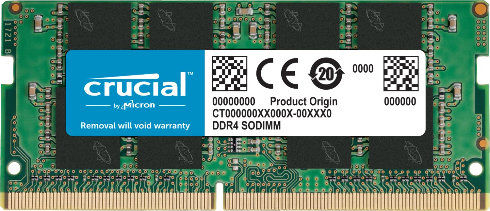
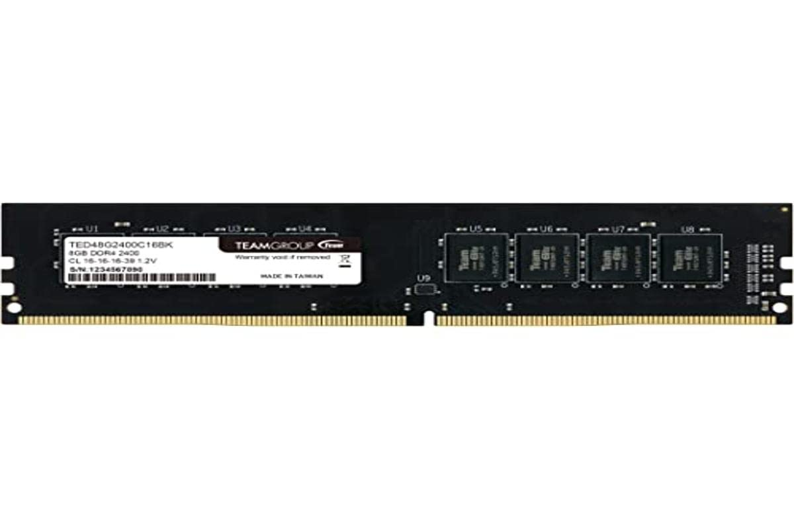
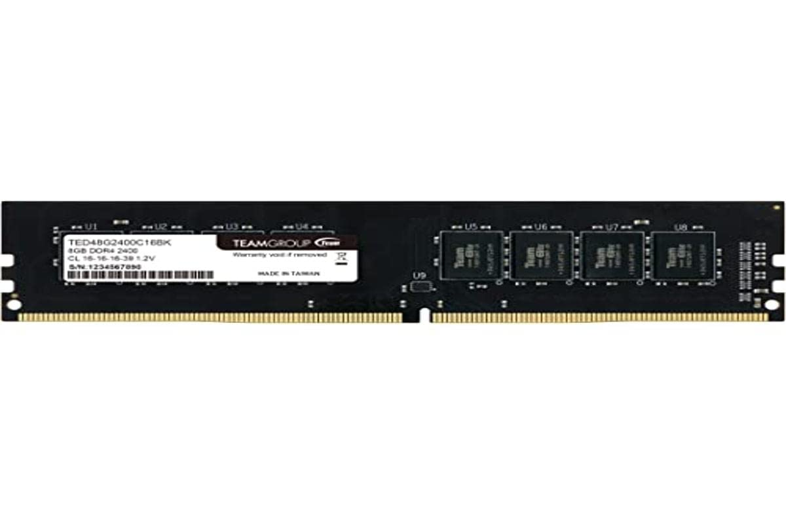
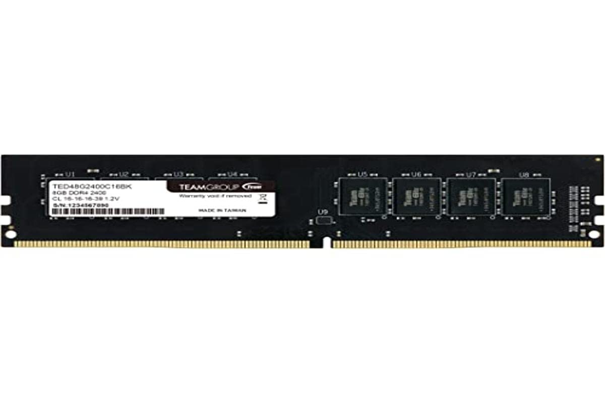

مرحبا بكم في قسم ذاكرة عشوائية
الرام او ذاكرة عشوائية
تعمل ذاكرة الوصول العشوائي (RAM) التي تستخدمها في جهاز الكمبيوتر الخاص بك باستخدام معدل بيانات مزدوج DDR. لذا فمصطلح DDR RAM يعني أن الذاكرة الخاصة بك تقوم بعمليتي نقل للبيانات في كل دورة تردد، وهذا بالطبع يعني عرض نطاق ترددي أعلى.
يتوفرلدينا نوعان من ذاكرةعشوائية
ddr3R3&DDR4
ويتوفرلدينا رامات من ماركة
crucial&teamgruop


 
